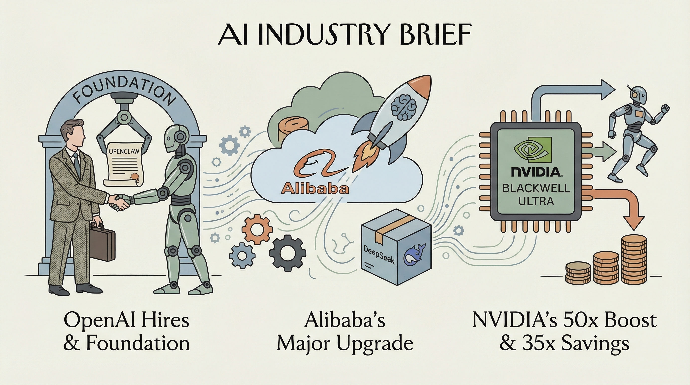

OpenAI 招募 OpenClaw 创始人 Peter Steinberger 并设立基金会。
两克伴AIGC日报
2026-02-17 星期二

本期关注：OpenAI招聘设基金会、阿里升级AI模型，NVIDIA Blackwell Ultra提升Agentic AI性能，qwen3隐私优先离线应用发布，QWEN 3.5空间推理性能显著超越部分顶级模型。
📰 行业动态
阿里巴巴在 DeepSeek 发布前升级其旗舰 AI 模型。
NVIDIA Blackwell Ultra 平台为 Agentic AI 提供高达 50 倍的性能和 35 倍的成本降低。
🔥 今日焦点
近日，Reddit用户u/alichherawalla发布了一款名为qwen3的隐私优先的离线移动应用程序，旨在解决用户对数据外泄的担忧。该应用利用本地运行的LLM（大型语言模型）技术，实现了高质量输出，有效提升了离线LLM的使用体验。
qwen3的核心功能在于其强大的本地处理能力，能够自动识别图像生成请求，并路由至相应模型。此外，该应用还能优化用户输入的提示，提升输出质量。值得一提的是，qwen3还支持本地运行Stable Diffusion，实现图像生成功能，且在Android和iOS平台上均能实现15秒内的图像生成。
在最新的AI资讯中，u/ENT_Alam在Reddit上分享了关于QWEN 3 Max-Thinking与QWEN 3.5在空间推理基准测试（MineBench）中的对比研究。研究结果显示，QWEN 3.5在性能上取得了显著提升，部分构建甚至接近或超越了Opus 4.6、GPT-5.2和Gemini 3 Pro等顶级模型。这一发现对于AI领域具有重要意义，因为它揭示了在空间推理任务上，模型性能的巨大进步。
MineBench是一个专门针对空间推理任务的基准测试平台，其重要性在于为AI模型在空间推理领域的性能评估提供了一个标准化的工具。QWEN 3 Max-Thinking和QWEN 3.5的对比研究，不仅展示了模型在特定任务上的进步，也为AI领域的研究者提供了宝贵的参考数据。
本周AI领域热点资讯回顾：Anthropic公司融资激增，与五角大楼展开合作；AI疲劳现象引发关注；Gemini 3深度思考与Seedance项目进展；AI安全并非唯一关键；Slop cannons技术突破；Claude的灵魂探索。
Anthropic公司近期获得巨额融资，标志着其在AI领域的快速发展。与五角大楼的合作更是彰显了其在国防科技领域的实力。然而，AI疲劳现象的出现提醒我们，AI技术发展需要关注用户体验，避免过度依赖。
📚 深度长文
本文深入探讨了Anthropic的Claude Code在桌面环境下的应用体验。作者作为Claude Code的重度用户，分享了其通过桌面应用程序而非网页界面进行操作的独特见解。文章强调，相较于云端的Claude Code版本，桌面应用程序在安全性、便捷性和功能丰富性方面具有显著优势。作者特别赞赏桌面应用程序中“查看图像”功能，该功能允许用户直观地了解Claude Code的运行状态，为AI从业者提供了宝贵的视觉反馈。本文对于关注AI工具应用与用户体验的读者具有极高的阅读价值，有助于深入了解桌面环境下Claude Code的强大功能。
---
本文讲述了视障工程师Joe McCormick如何利用Claude Code这一创新工具，将Slack中的图像转换为描述，即时纠正错别字，并总结链接内容，从而极大地提高了他的生活和工作便利性。文章深入探讨了Joe如何通过简单的键盘快捷键，将人工智能技术融入日常工作中，实现了对视觉障碍的突破。这不仅展现了人工智能在辅助视障人士方面的巨大潜力，也为AI从业者和广大用户提供了宝贵的启示。阅读本文，读者可以了解到如何利用人工智能技术解决实际问题，以及如何将创新思维应用于日常生活和工作。
---
随着远程工作的兴起，商业沟通方式发生了翻天覆地的变化。本文深入探讨了这一变革，指出从教育到企业，各行各业都在重新思考清晰、可靠的沟通在混合工作模式中的重要性。文章指出，从最初的家庭办公功能化到如今的技术革新，音频和通信领域正引领这一变革。文章揭示了未来协作的潜在趋势，为AI从业者提供了宝贵的洞察和启示。通过分析关键论据，本文揭示了深度和独特见解，为读者呈现了一个充满机遇和挑战的未来协作图景。
🛠️ 产品推荐
LLMFeeder是一款多标签网页转Markdown工具，旨在为大型语言模型（LLM）提供更优质的内容输入。通过解决网页内容中的广告、弹窗和导航杂乱等问题，该工具有效提升了LLM的上下文理解能力。最新版本v2.1.0新增多项功能，旨在为LLM提供更精准、高效的内容输入，助力开发者提升AI应用性能。
---
Boxofrocks是一款专为开发者设计的Sandboxed Agentic-AI友好型简单GH Issues Extension。该产品旨在解决并行Docker沙箱开发代理任务管理混乱的问题。通过提供简便的安装、部署和管理多开发代理工作流程的功能，Boxofrocks有效提升了开发效率，降低了配置漂移、JSONL/DB同步等复杂问题。其AI能力在简化开发代理任务管理方面具有创新性，为技术从业者提供了一种高效、便捷的开发体验。
---
Show HN: You Shouldn't Need a Security Degree to Pick an AI Agent Host是一款专注于提升AI安全选择便捷性的产品。该产品通过提供易于理解的AI安全方法论，帮助用户无需具备专业安全背景即可轻松挑选合适的AI代理。其核心功能在于简化AI安全评估流程，降低用户学习成本，助力技术从业者快速掌握AI安全知识。产品以简洁、专业的语言呈现，特别强调其AI能力和创新点，为用户带来高效、便捷的AI安全选择体验。